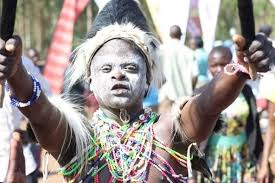

Welcome to Ugandan Culture
Experience the Rich Heritage of Uganda
Explore Uganda's diverse traditions, delicious food, and vibrant music.
Explore MoreTraditions
From storytelling to ceremonies, Uganda's traditions reflect a deep history of unity and identity.
Learn More

Music & Dance
Experience the vibrant rhythms of Uganda, where music and dance bring people together.
Learn MoreHeritage & Tourism
Explore Uganda’s cultural sites, from the Kasubi Tombs to the Nile’s source.
Learn More